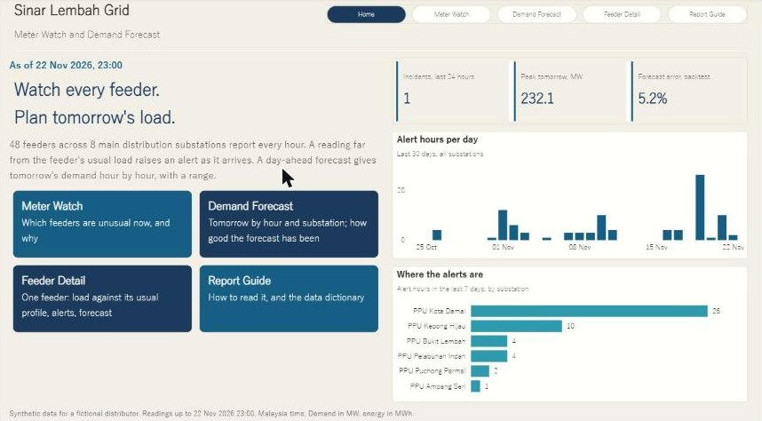
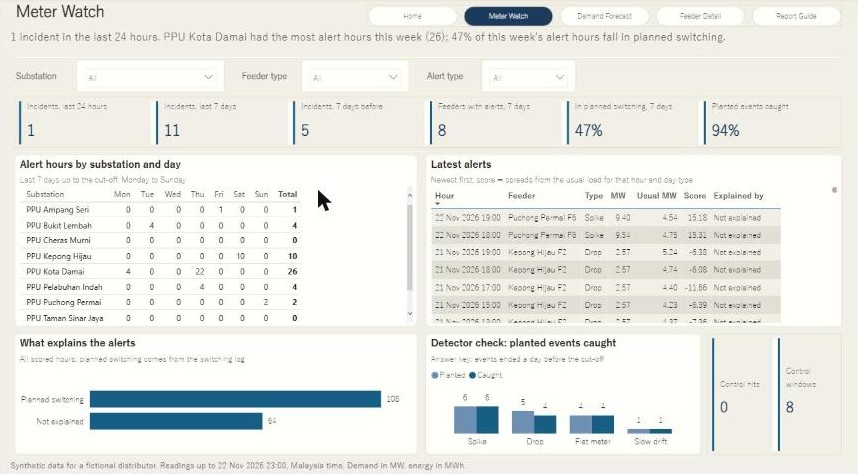
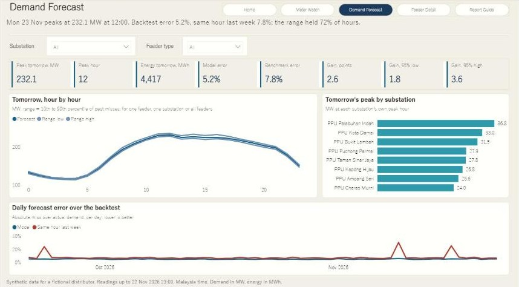
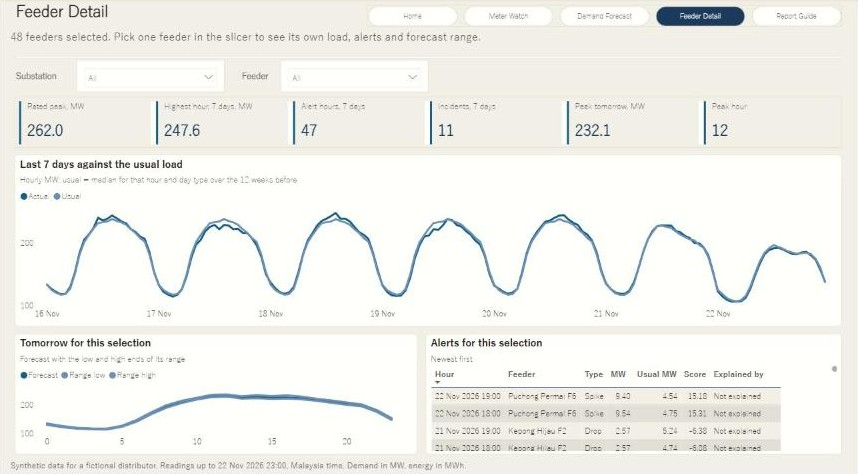
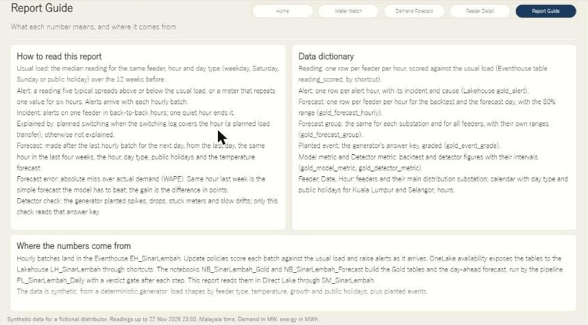

Grid demand forecast and meter watch
Rebuild a Fabric workspace that scores hourly feeder readings as they arrive and forecasts tomorrow's demand, from one Git repository.
The company is fictional and all data is synthetic. Sinar Lembah Grid, 48 feeders, 8 main distribution substations. There is no live link: you build it in your own workspace in about an hour.
Source on GitHub · Download ZIP · Build record · Model card
Get the code and see what is in it
One repository holds the Fabric items as files, the generators that wrote them and a tool that builds a workspace from them.
Download the repository (ZIP), or clone it:
git clone https://github.com/BIVenture2025/sinar-lembah-grid-forecast.git cd sinar-lembah-grid-forecast python3 --version # 3.10 or later pip install azure-identity fabric-cicd pandas scikit-learn
| Folder | What is in it |
|---|---|
fabric/ | The Fabric items in Git format: Eventhouse and KQL database, Lakehouse, three notebooks, pipeline, model, report, Variable Library, parameter.yml |
src/ | The generator oracle, the KQL scripts, the notebook modules and their offline tests, the builders of the estate, model and report |
kit/ | PBIR visual primitives, the statistics check, the fabric-cicd deploy wrapper |
tools/ | plan_create.py, which builds an empty workspace from fabric/ |
docs/ | This guide, the build record, the model card, the brief and the design package |
az login as that user.Understand the data before you build it
Nothing is downloaded: a generator writes the data inside the KQL database. It draws hourly load for 48 feeders from daily and weekly shapes by feeder type (residential, commercial, industrial, mixed), temperature, slow growth and the 2026 public holidays for Kuala Lumpur and Selangor. Then it plants 64 events (spikes, drops, stuck meters and two slow drifts) and logs 43 planned load transfers between feeders.
cd src python3 gen_oracle.py # the same generator in Python: 455,040 rows, SUM(demand_mw) 1,703,132.743
fn_u, fn_gen) and gen_oracle.py use the same 32-bit mixing hash, so they produce the same numbers to the last decimal. Any difference between the database and the oracle is a bug, found by comparing two totals.The hash
Uniform noise comes from u(a, b, c): XOR of three multiplied keys, then two rounds of shift-XOR-multiply by 0x45D9F3B, masked to 32 bits. KQL has binary_xor, binary_shift_right and binary_and, so the same function runs in both places and the data needs no file transfer.
Build the workspace from the repository
Create an empty workspace on your capacity and copy its id from the address bar. Then run the create tool. It sends the items in three waves: the Eventhouse with its KQL database and the Variable Library, then the Lakehouse with its eight shortcuts, then the notebooks, pipeline, model and report with a deployment plan whose post-action runs the seed notebook.
export TARGET_WORKSPACE_ID=<your empty workspace id> python3 tools/plan_create.py . # log: tools/plan_create_log.txt python3 tools/plan_create.py . verify # read every definition back
The seed notebook builds the KQL schema, turns on OneLake availability, loads 13 months of history, writes two baselines, scores the backfill, adds the update policies and replays the last 7 days hour by hour. It takes about 2 minutes and fails the run if the row count or the demand total is wrong.
Mirroring cannot go in the database definition
.alter table ... policy mirroring is refused with ScriptContainsUnsupportedCommand, so the seed notebook turns it on before the first row. Turned on later, OneLake availability shows only rows written afterwards.Update policies before the backfill
Two databases with one name
Pipeline references
00000000-0000-0000-0000-000000000000, Git's form for this workspace. A real id makes Bulk Import look for the notebooks outside its own payload (DependenciesCouldNotBeResolved).Run the daily pipeline
Run PL_SinarLembah_Daily. It runs NB_SinarLembah_Gold, checks its verdict, then NB_SinarLembah_Forecast, and checks again.
Each notebook ends with a JSON verdict; anything other than GOLD_OK or FORECAST_OK fails the run and keeps yesterday's tables.
- Gold waits until every shortcut shows the KQL row count, groups alerts into incidents, names the cause (planned switching or not explained) and grades the detector against the planted events, apart from what the operators see.
- Forecast checks its inputs are complete (one row per feeder and hour), backtests 9 weekly folds, tests the kill criteria K0 to K7, runs AutoML on the last fold as a challenger, fits ranges per level and registers the model in MLflow when the checks pass.
{"p_block_at": "Gold"} # run parameter that forces the Gold gate shut: the run must fail with P37_GOLD_BLOCKEDp_block_at set proves the pipeline stops after Gold and the forecast never starts.Pipeline parameters are flat
{"p_block_at": "Gold"}. The notebook form {"p_block_at": {"value": "Gold", "type": "string"}} is accepted and silently ignored, so the gate never closes.A notebook verdict must raise
notebookutils.notebook.exit always ends a run as Completed. The notebooks raise on a bad verdict, because a deployment-plan post-action has no gate of its own.Refresh the model and read the report
Refresh SM_SinarLembah once (for Direct Lake it only frames the tables) and open P37_SinarLembah.
Every sentence under a page title is a DAX measure, so it changes with the data and the slicers.





Clearing a fact table clears its dimensions
REMOVEFILTERS ( 'Forecast group' ) also removes the date and hour filters that reach it (the expanded table), so the range summed every day. Clear the table's own columns instead.A variable named like a function
VAR topN = ... collides with TOPN because DAX names ignore case. The deploy accepts it and the measure becomes SYNTAXERROR. Check INFO.MEASURES() for a state other than 1 after every deploy.Check it
Five checks tell you the rebuild is the same as the original.
- In the KQL database:
meter_reading | summarize count(), sum(demand_mw)gives 455,040 and 1,703,132.743. - The Gold verdict: 172 alert hours, 58 incidents, 15 of 16 matured events caught, 0 hits in 8 control windows.
- The forecast verdict: K0 to K7 pass and the features hash equals
src/nb/offline_features_hash.txt. - In the model: each table counts equal to its Gold table, and no relationship has an orphan row.
- The statistics check: export the all-feeders backtest rows of
gold_forecast_group(level System, backtest true) to CSV and run it; the model must be better than the benchmark with the interval above zero.
python3 kit/stats_check.py --regression --csv backtest.csv --actual y --pred naive --pred model --block fold # MODEL_BETTER: gain 1.76 points, 95% interval 1.09 to 2.53 (all feeders)
src/nb/test_gold_offline.py and test_forecast_offline.py run the same modules on the oracle's data, so you can change a rule and see its effect in a minute before anything is deployed.The traps table
What the author hit and a reader would otherwise find out the hard way.
| Trap | What happens | Fix |
|---|---|---|
| Mirroring turned on after the load | OneLake availability shows only rows written afterwards; backfill is refused on an enabled policy | Turn it on before the first row |
| Mirroring in the database definition | ScriptContainsUnsupportedCommand | Set it from the seed notebook |
| Shortcuts read straight after a write | The Lakehouse can be a minute behind the KQL table | Wait until each shortcut shows the KQL row count (26 to 28 s here) |
| Lags by row position | One missing hour shifts every later lag silently | Join lags on the hour, and check one row per feeder and hour first |
| A window measure on a weekday axis | MAX('Date'[date]) picks a date outside the window, so Monday disappears | Test the dates in context with FILTER(VALUES('Date'[date]), ...) |
| An "80% range" that is not | The range held 72% of hours out of sample | Say what it held, from the model; widen it in the next version |
| Two databases with one name | Kusto lookups by display name fail in a new workspace | Use the KQL database item id |
| Real workspace id in a pipeline | DependenciesCouldNotBeResolved in Bulk Import | Use the zero GUID for this workspace |
Known limits
Smaller points: the substation by day matrix has no colour scale and the range is drawn as two lines, not a band. No Real-Time Dashboard or Activator alert.
What this does not do
No outage management, no meter-to-cash, no customer-level data. It watches feeder-level readings and forecasts feeder-level demand; the data is synthetic.